Kapture the Snake of 88'
PlayStation Spring 2026 Game Jam
Game Trailer
C#
Blender
Fusion 360
Substance Painter
Photoshop
VRoid Studio
Gameplay Video
Full Gameplay Video. It's 22 minutes long, so idk if you want to watch it all.
Environment Art & World Building
- Textured and set-dressed approximately 100 environmental assets in Unity.
- Created the abandoned Kappa House atmosphere through prop placement, lighting, and environmental storytelling.
- Optimized scene assets and materials for Unity performance.
- Designed environmental details that support investigation gameplay and player exploration.
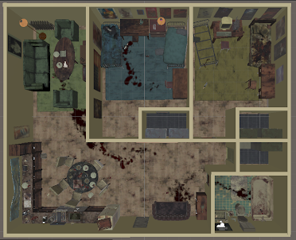
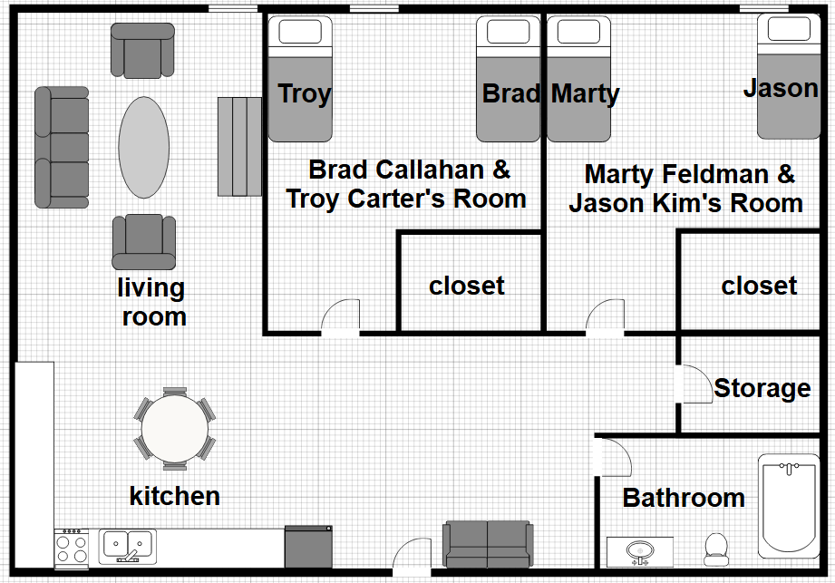
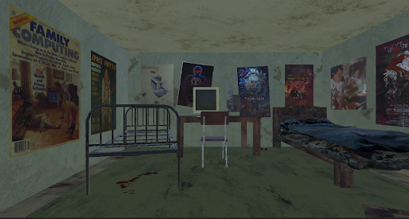
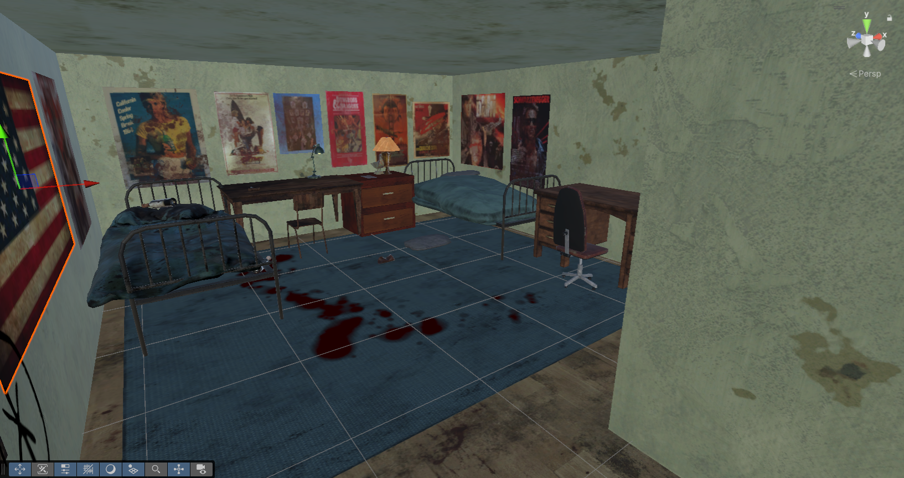
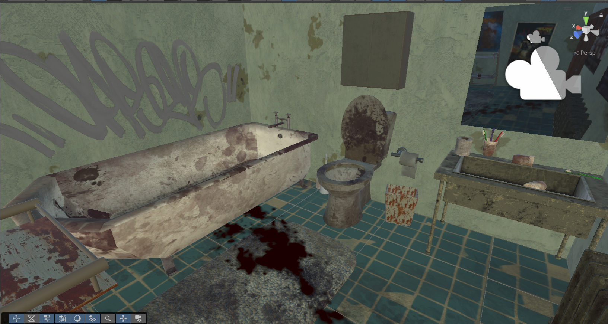
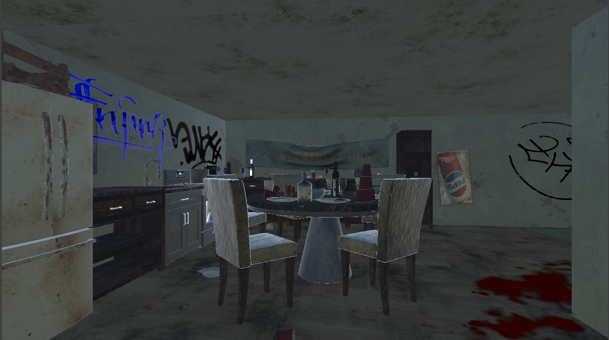
Characters Concept & Final Design
- Designed all playable characters and the seven ghost NPCs.
- Created and customized character models using VRoid Studio and Photoshop.
- Developed custom textures including blood, dirt, facial details, and clothing variations.
- Exported and optimized .vrm character assets for Unity using UniVRM.
- Established each character's visual identity to reflect their personality and backstory.
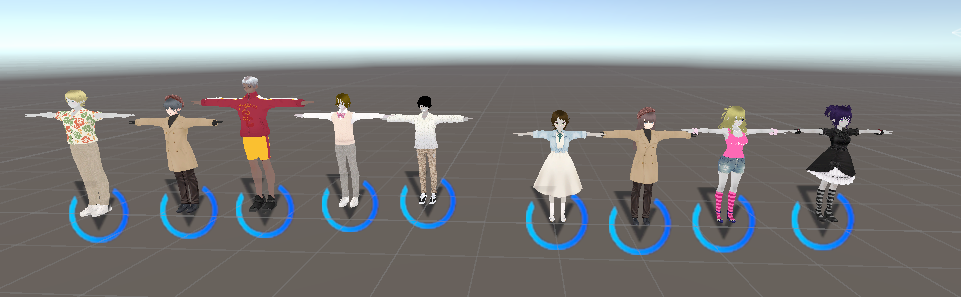
Yeah I made all the characters in 1 week lol.
The following are the main characters in the game, including the seven ghosts and the player characters (private investigators). In this game, you are the interviewer who asks questions to the ghosts and see if their testimonies are consistent. The goal is to identify the true killer among the seven ghosts. Each time that you start the game, the killer is randomized.
Raven Hollow (Gothic Ghost)
A withdrawn post-punk gothic girl who spends most her nights alone.
Emily Millers (Naive Ghost)
An optimistic freshman who believes everyone has good intentions.
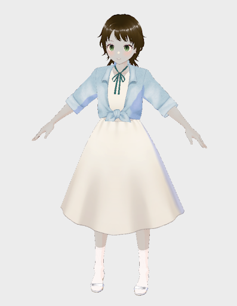
Troy Carter (Football Athlete Ghost)
A confident varsity football player who hides insecurity behind bravado.
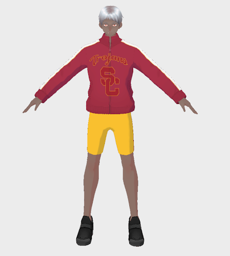
Brad Callahan (Frat Guy Ghost)
The charismatic host of the Kappa House party.
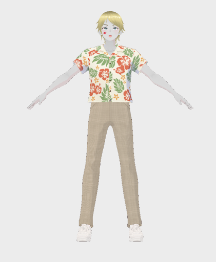
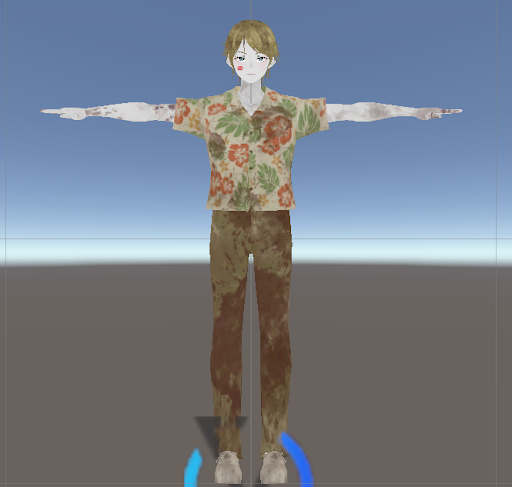
Jason Lim (Transfer Ghost)
An international transfer student who observes campus culture from an outsider's perspective.
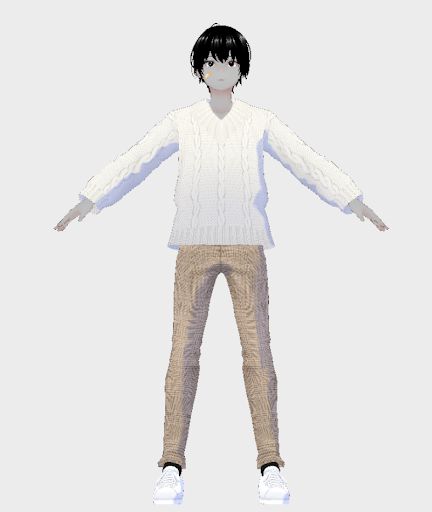
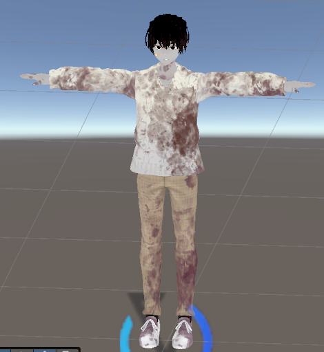
Marty Feldman (Nerd Ghost)
A socially awkward nerd who is obsessed with video games, technology, and comic books.
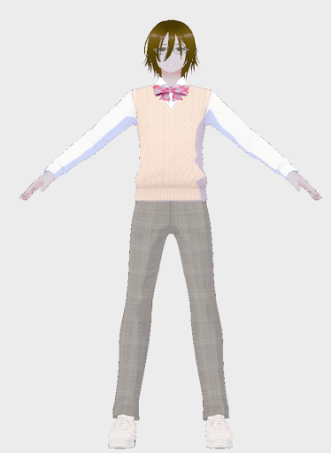
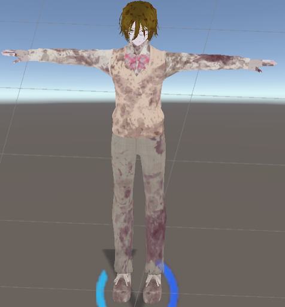
Players (Private Investigators)
The players are private amateur investigators who are recruited to solve the mystery of the Kappa House tragedy.
Final Voting Phase
After gathering evidence, players enter a final voting phase to identify the true killer. The team must discuss their findings, compare ghost testimonies, and vote correctly to complete the investigation.
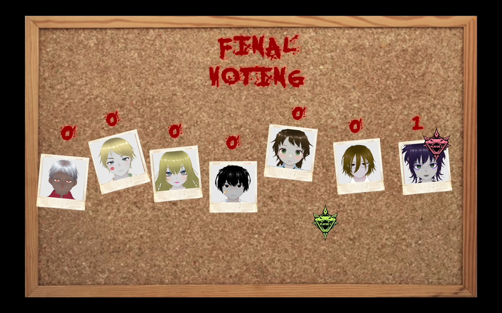
Pitch Deck
We used this pitch deck to present our game concept & mechanics to judges from San Diego Studio, Insomniac Games, Bend Studio, Naughty Dog, Santa Monica Studio, and other industry professionals attending the game jam presentations.
Game Presentation Pitch Deck
Trifold
I made this gameplay brochure and distributed to industry professionals at Sony Interactive Entertainment HQ during the networking demo session to provide a quick overview of the project.
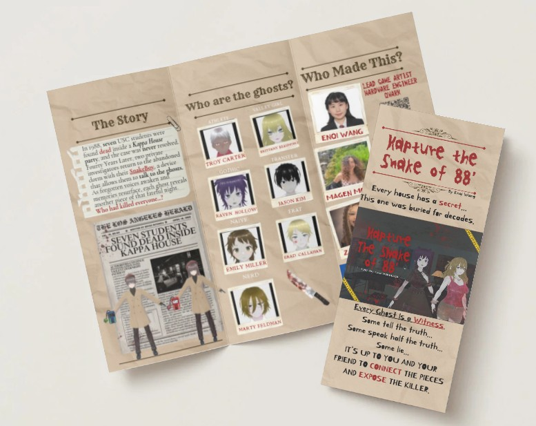
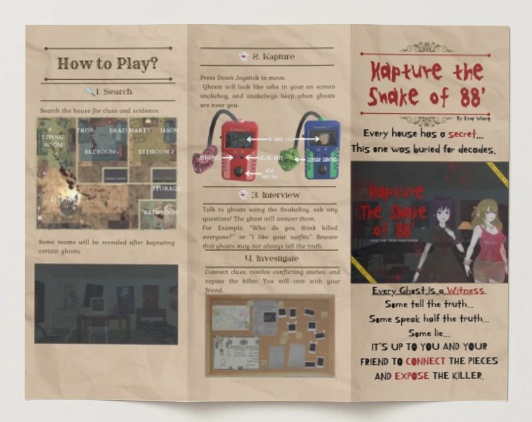